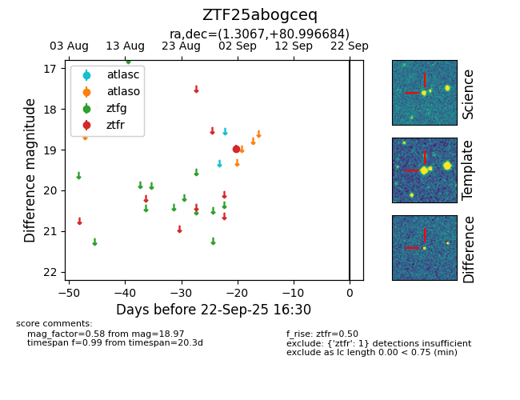

FINK: ZTF25abogceq
Lasair: ZTF25abogceq
ALeRCE: ZTF25abogceq
ZTF25abogceq (ztf,fink)
equatorial (ra, dec) = (1.3067,+80.99668)
galactic (l, b) = (121.0403,+18.29513)

last ztfr=18.97
1 ztfr detections